← 返回阅读库 · 原论文目录
论文讲解阅读文档 · 表征学习 · v180
SimSiam Exploring Simple Siamese Representation Learning[2011.10566]
视频时长 00:09:14；讲解文字 3,634 字符；提取讲解画面 39 张。按视频原顺序阅读，每段文字保留时间戳。
文字来自整段视频的自动语音转写，按自然停顿分段，并与 PPT / 论文页面 / 演示画面对齐。未将讲解压缩为摘要；术语、数字和口述公式请结合画面及原论文核对。 阅读稿已校正规范部分明确术语误识别；原始逐字稿和每处修改记录另行保留。
讲解画面为源视频截图（640×360），不是可编辑 PPT 文件。全片按每秒 2 帧扫描内容变化，逐步展开页保留；连续动画保留代表画面。清晰度受源视频限制。
下载完整资料包 · 含离线 HTML、PDF、Word、全部 PPT 画面和字幕。
原论文与材料
Exploring Simple Siamese Representation Learning · 下载完整 PDF（10 页）
按时间阅读
00:00:00–00:00:30 · 画面 001
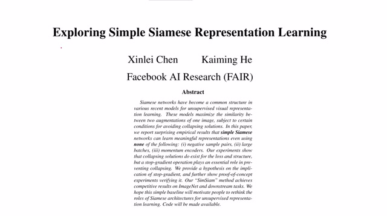
00:00:00–00:00:30 · 画面 001大家好今天我们来介绍 Exploring Simple Siamese Representation Learning 那么这篇文章呢和 BYOL 非常相关在本文中呢作者使用一个非常简单的 Siamese Network 就可以学到有用的这个 Representation 用来表达图像同时呢本文也没有使用像负样本呀没有使用大的 Batch Size 呀甚至没有使用 Momentum Encoders 这些东西等等等等这些都没有但是依然能够防止模型坍塌达到了一个不错的结果那么在今天的视频中我们首先介绍一下什么是 Siamese Network 然后会对本文提出的方法以及作者进行了一些实验进行分析最后是一些更加正式的实验结果以及作者的猜测说为什么这样一个简单的网络结构能够 work 好的那么我们开始
00:00:30–00:00:51 · 画面 002
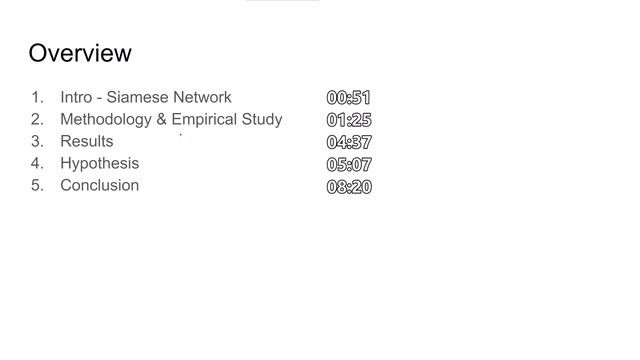
00:00:30–00:00:51 · 画面 00200:00:51–00:01:12 · 画面 003
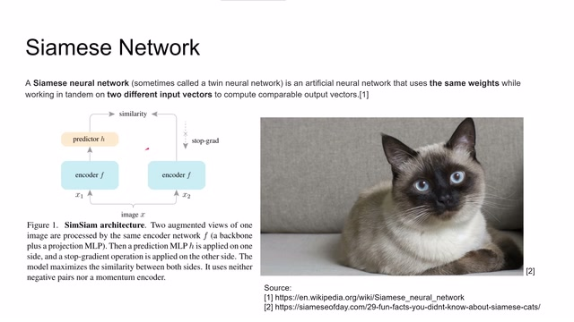
00:00:51–00:01:12 · 画面 003首先什么是 Siamese NetworkSiamese Network 呢就是同一个网络它分成了两个支然后每一支呢它们都使用相同的权重但是呢输入呢是两个不同的向量就像图中表示的这两个 encoder 它们的权重里面的参数是一样的它们的输入呢是由 X 产生的两个不同的图像那么像这样的网络呢就是 Siamese Network 那当然呢你如果直接在网上搜 Siamese 是吧
00:01:12–00:01:13 · 画面 004
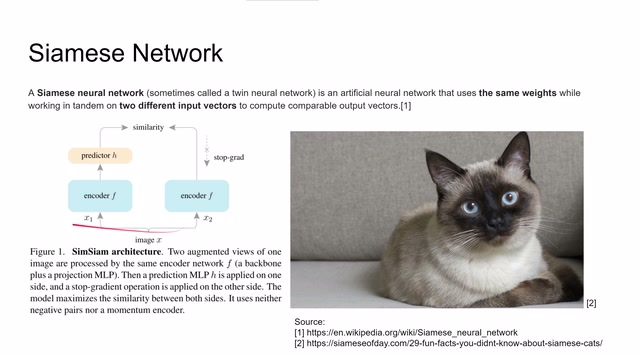
00:01:12–00:01:13 · 画面 00400:01:13–00:01:18 · 画面 005
00:01:13–00:01:18 · 画面 00500:01:18–00:01:19 · 画面 006
00:01:18–00:01:19 · 画面 00600:01:19–00:01:26 · 画面 007
00:01:19–00:01:26 · 画面 007可以得到可爱的线罗猫那么本文提出的一种什么样的方法呢其实本文提出的方法跟之前我们介绍的 BYOL 是非常相近的只不过在本文中它的两个 encoder 把 momentum 都去掉了直接使用相同的权重那么它从结构上它把 BYOL 的 encoder 和 projection 拧合到一起也就是这个 encoder 是 CNN 加很多层全连接层的结果
00:01:26–00:02:35 · 画面 008
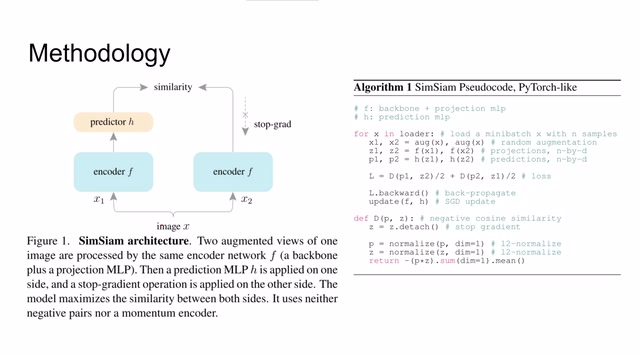
00:01:26–00:02:35 · 画面 008那么同时呢也保留这个 predictor 这边呢就是跟左边一样的结构那么训练这个网络的方法呢作者也在这里提供了伪代码与和 BYOL 非常相近也是同样一幅图像来进行两种不同的互相增强得到 X1 和 X2 那么把 X1 和 X2 呢分别送到两只 encoder 里面当然因为这里面两个 encoder 他们的参数是一样的所以我们都用一个 F 就好了那么在之后呢把这个 encoder 之后的结果再送到这个 predictor 里面那么同时呢也是计算两个相当之间的 MSE 最后呢进行计算最后计算一下梯度来更新一下这个 encoder 那么这就是本文提出的 Siamese Network 的训练方法非常简单嘛所以叫 SimSiam
00:02:35–00:02:55 · 画面 009
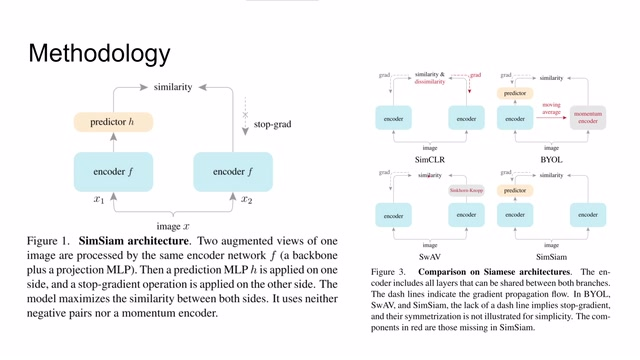
00:02:35–00:02:55 · 画面 009那么对比其他的 contrastive learning 的方法,像 SimCLR,它是使用了 similarity 和 dissimilarity,就是 contrastive loss 这种方法,BYOL 是 momentum,对吧?那么对比之前的这些方法,本文提出的方法是非常简单的,但是呢,很神奇的是它依然能够 work。那么为了进一步确认哪一部分的设计在本文的这个框架中是至关重要的,作者进行了一堆实验。首先呢,它这里。
00:02:55–00:03:31 · 画面 010
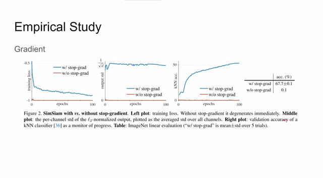
00:02:55–00:03:31 · 画面 010测试了是否有这个 stop gradient 也就是是否停止一侧鸟网络传递这个 loss 那么很显然如果使这个 T2 进行传递我们现在起来的 loss 是非常小的因为两只网络的它们的参数都是接近一模一样的但是呢它的这个最后的性能的表现是非常差的因为它们很容易就达到两个网络参数一样最后模型坍塌就实际上并不能学到什么有效的特征那么作者呢还测试了这里
00:03:31–00:03:48 · 画面 011
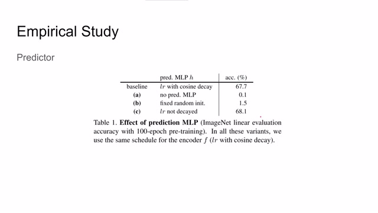
00:03:31–00:03:48 · 画面 011用不同的 predictor 甚至没有 predictor 那么从结果来看如果没有 predictor 如果甚至是只用一个随机的值随机的固定的值来作为 predictor 那么基本上也是学不到什么东西的所以说 predictor 呢也是非常重要的
00:03:48–00:03:53 · 画面 012
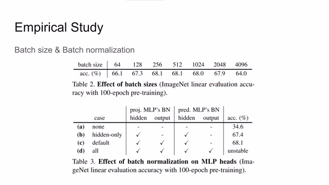
00:03:48–00:03:53 · 画面 012此外呢作者还测试了 BatchSize 和 BatchNormalization 那么从结果来看呢 BatchSize 的影响并不是很大而 BatchNormalization 呢在 Projection 里面所有的 HiddenLayers 和这个 Output 都需要加而在 Predictor 里面呢只加了 HiddenLayers 这样是最好的
00:03:53–00:03:55 · 画面 013
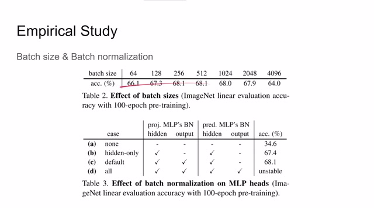
00:03:53–00:03:55 · 画面 01300:03:55–00:04:06 · 画面 014
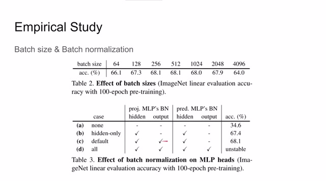
00:03:55–00:04:06 · 画面 014那么作者这里还汇报了其他的项目,包括最后使用的 loss function,也就是两个向量的 similarity,两个向量的相似程度的 function,那么原始的是 MSE,也就是两个向量的夹角 cosine,然后它还换成了 cross entropy,某种程度上也是 work 的。
00:04:06–00:04:38 · 画面 015
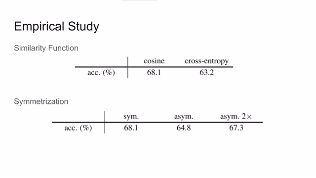
00:04:06–00:04:38 · 画面 015那么他还测试了说这两个网络的对称如果说把这两个网络改的不对称了另一种不对称的结构会怎么样呢在一定程度上也是 work 这一部分也相当于佐证了 BYOL 的实验结果
00:04:38–00:04:55 · 画面 016
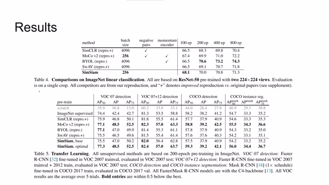
00:04:38–00:04:55 · 画面 016那么作为最终结果的呈现呢，作者测试了 ImageNet 训练好这个 representation，然后使用一层 linear layer 来做这个分类。这里测试了 ResNet50 这个 encoder 得到的结果来看，那么本文提出的方法呢，跟前面的工作呢性能是非常接近的。那么同时呢，作者还测试了一些迁移学习的这些东西，这是得到汇报的数据，可以看到呢性能表现也是非常接近甚至优于一些前人的工作
00:04:55–00:04:56 · 画面 017
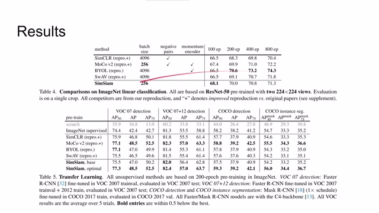
00:04:55–00:04:56 · 画面 01700:04:56–00:05:07 · 画面 018
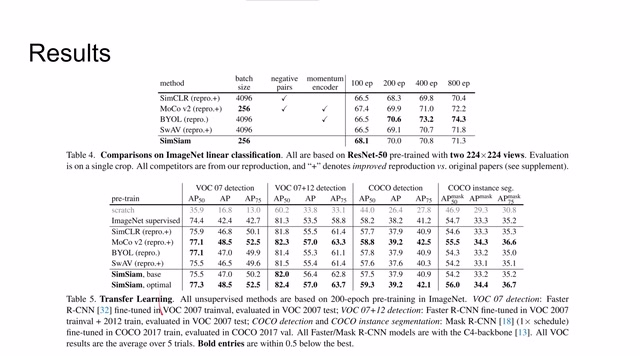
00:04:56–00:05:07 · 画面 01800:05:07–00:06:43 · 画面 019
00:05:07–00:06:43 · 画面 019那么为什么这样那种简单的网络能够 work 呢？啊，作者提出了一种猜想，他认为说呢，SimSiam 是一个 expectationmaximization 的，也就是呢是一种最大期望算法。那么我们最熟悉的最大期望算法的例子呢就是 kmeans。那么具体来看这里呢，我们的 x 是输入图像，t 是图像的一个种增强，fc 它呢是我们的 encoder我们把这幅图像经过增强之后送到 encoder 里面，减去这个 eta x 这个 eta x 呢不一定局限为图像的 representation。总之呢，当我们训练这个网络时，我们是希望找到一个 theta，找到一个 eta，使得这个 loss 的期望是最小的。那么实际上当我们训练的时候呢，是分步进行训练的，比如在每一步里面我们首先会确定一个 theta，使得这个 loss 最小
这个时候呢，我们是使用一个固定的 eta 的。那么这样呢，我们就得到一个θt，然后使这个θt 所死我们再寻找一个 eta，使这个 eta 呢能够达到我们的这个机制。然后呢，反复进行这两步，最终呢训练得到一个满意的结果。那么当我们训练 eta 的时候呢，我们把θ作为一个常数代入到上面的式子，那么就可以得到这样的一个式子，这就是我们如何得到一个新的 eta那么我们把这个式子带回到上面的式子，同时因为我们使用的是 Siamese network，所以它的左右的两个 encoder 的参数都是一样的。那么最终我们就得到了这样一个式子来更新θ。这里 fθ就是我们左边带 predictor 的部分，这里的这个 fθt 就是我们右边没有 predictor 的部分。然后这个 t'是因为它是在上一个训练周期中我们使用的图像自相策略，所以跟这个 t 是不一样的
00:06:43–00:06:44 · 画面 020
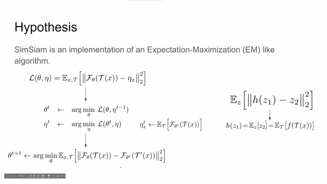
00:06:43–00:06:44 · 画面 02000:06:44–00:06:48 · 画面 021
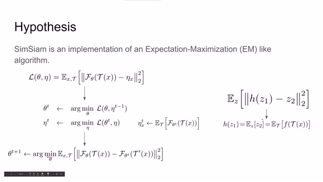
00:06:44–00:06:48 · 画面 02100:06:48–00:07:08 · 画面 022
00:06:48–00:07:08 · 画面 022所以呢，这里我们加一个 prime 来以示区分。那么这样对这一个 MSE 的最终的期望，我们要使这个期望最小，也就是我们如何训练这个 theta。那么这个时候呢，有朋友注意到了在我们左边的网络中呢有一个 predictor，但是呢在这个式子中呢我们没有体现它。而且呢，对于这个式子中的两部分我们看，如果我们求期望
00:07:08–00:07:12 · 画面 023
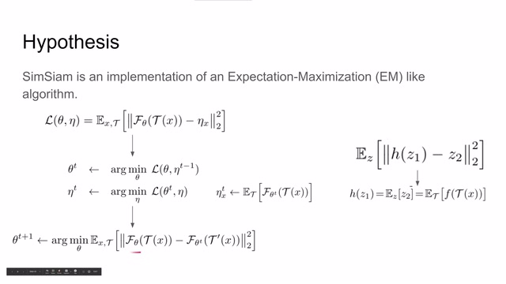
00:07:08–00:07:12 · 画面 02300:07:12–00:07:16 · 画面 024
00:07:12–00:07:16 · 画面 02400:07:16–00:07:18 · 画面 025
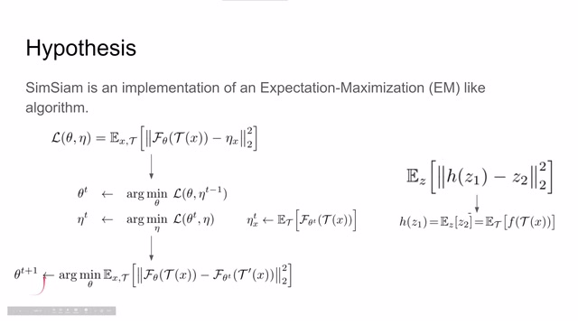
00:07:16–00:07:18 · 画面 02500:07:18–00:07:21 · 画面 026
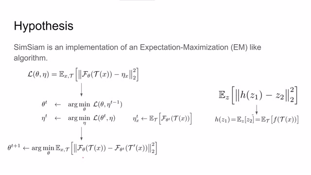
00:07:18–00:07:21 · 画面 02600:07:21–00:07:25 · 画面 027
00:07:21–00:07:25 · 画面 02700:07:25–00:07:26 · 画面 028
00:07:25–00:07:26 · 画面 02800:07:26–00:07:30 · 画面 029
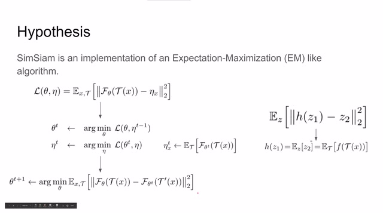
00:07:26–00:07:30 · 画面 02900:07:30–00:07:33 · 画面 030
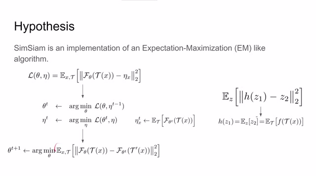
00:07:30–00:07:33 · 画面 030右边这一部分它是一个常数，它是好求的。那么左边这一部分我们是怎样求出它的期望来的呢？那么这里呢，作者呢就有一个猜测说，我们左边的 predictor 实际上拟合的呢就是这一部分的期望。因为我们是要优化一个形如这样的式子，那么我们的 predictor h 会在满足这个条件就是满足它是左边这个式子的期望的情况下
00:07:33–00:07:35 · 画面 031
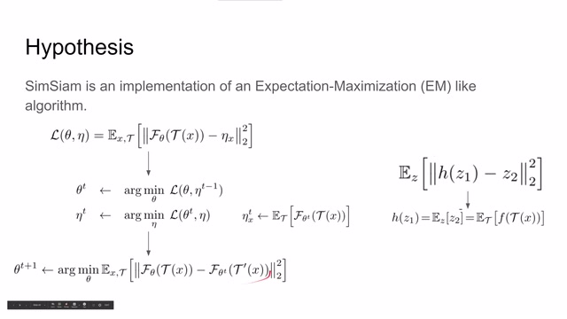
00:07:33–00:07:35 · 画面 03100:07:35–00:07:37 · 画面 032
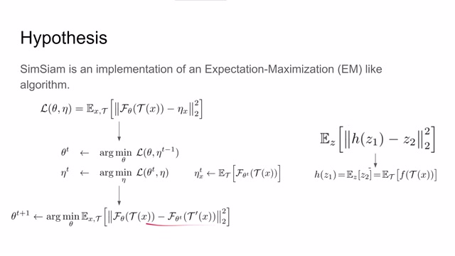
00:07:35–00:07:37 · 画面 03200:07:37–00:07:45 · 画面 033
00:07:37–00:07:45 · 画面 03300:07:45–00:08:11 · 画面 034
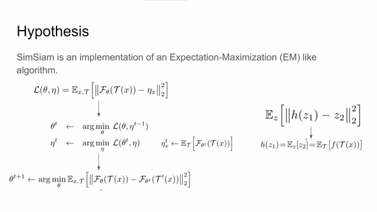
00:07:45–00:08:11 · 画面 034使整个的这个 loss 达到最优。所以也就是说，作者在这里猜测 predictor 为什么是必须的，因为它可以通过左侧的 prediction 求导出 prediction 的 expectation。所以可能这样就解释了为什么本文提出的网络是可以 work 的。那么总的来说，作者认为 Siamese network 是非常适合
00:08:11–00:08:12 · 画面 035
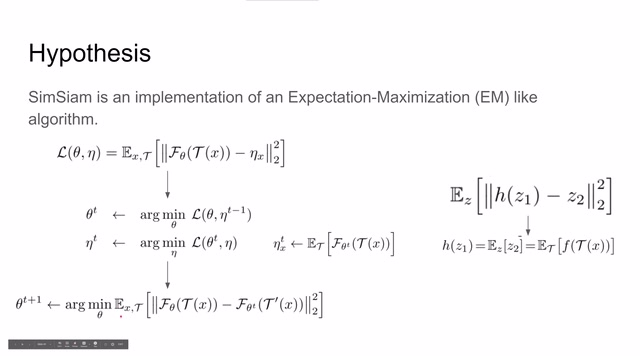
00:08:11–00:08:12 · 画面 03500:08:12–00:08:14 · 画面 036
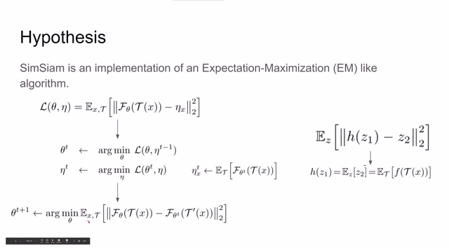
00:08:12–00:08:14 · 画面 03600:08:14–00:08:20 · 画面 037
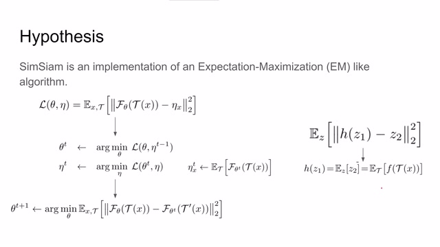
00:08:14–00:08:20 · 画面 03700:08:20–00:09:14 · 画面 038
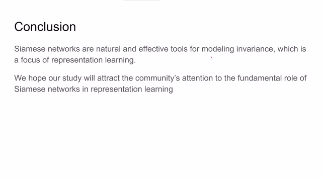
00:08:20–00:09:14 · 画面 038给一些不变量来进行建模的。也就是说呢，在这个 representation learning 里面，它是非常非常有用的一个工具。而且呢，本文提出一个非常简单的这个框架，它的性能呢也不错。所以希望说大家可以继续挖掘 Siamese Network 在 representation learning 中的这个使用的潜力那么总体来看呢，这并不是一篇非常难理解的论文，但是它最后能够确切运行的原理我们还没有说一个完整的通透的解释。所以呢，也欢迎各位朋友来查看原文来感受一下作者对这一个方面的讨论。好的，那么以上就是我对这篇论文的一个简单的分析，感谢各位的收看，我们下次再见
00:09:14–00:09:14 · 画面 039
00:09:14–00:09:14 · 画面 039转写与来源说明 · 0 个自动复核提示
保留 22 个原始语音片段，0 个片段触发自动复核提示。提示仅用于定位可能的术语、重复或识别问题，不等于已确认错误。
讲解画面为源视频截图（640×360），不是可编辑 PPT 文件。全片按每秒 2 帧扫描内容变化，逐步展开页保留；连续动画保留代表画面。清晰度受源视频限制。
原视频：paper/合集_2026-10-16_表征学习/[论文简析]SimSiam Exploring Simple Siamese Representation Learning[2011.10566].mp4
SHA-256：a14638c94ec0cd2183e85aa88b33ab8f7ebff11124525021fb1ddd9e9bf12c5f
全文按视频语音与画面制作。原论文可从上方链接下载；完整资料包保留全文、原始逐字稿、字幕和校对记录。